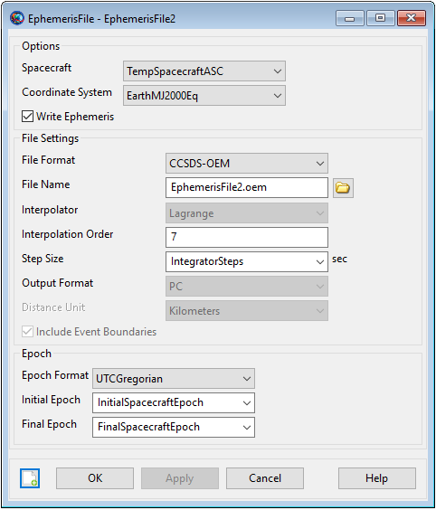
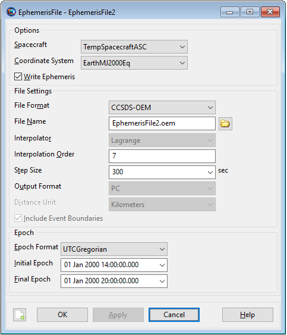

EphemerisFile — Generate spacecraft’s ephemeris data
EphemerisFile is a user-defined resource that generates spacecraft’s ephemeris in a report format. You can generate spacecraft’s ephemeris data in any of the user-defined coordinate frames. GMAT allows you to output ephemeris data in CCSDS-OEM, SPK, Code-500 and STK .e (STK -TimePosVel) formats. See the Remarks section for more details. EphemerisFile resource can be configured to generate ephemeris data at default integration steps or by entering user-selected step sizes.
GMAT allows you to generate any number of ephemeris data files by creating multiple EphermisFile resources. An EphemerisFile resource can be created using either the GUI or script interface. GMAT also provides the option of when to write and stop writing ephemeris data to a text file through the Toggle On/Off commands. See the Remarks section below for detailed discussion of the interaction between EphemerisFile resource and Toggle command.
See Also: CoordinateSystem, Toggle
| Field | Description | ||||||||||||
|---|---|---|---|---|---|---|---|---|---|---|---|---|---|
| CoordinateSystem | Allows you to generate spacecraft ephemeris w.r.t the coordinate system that you select for this field. Ephemeris can also be generated w.r.t a user-specified coordinate system. This field cannot be modified in the Mission Sequence.
| ||||||||||||
| DistanceUnit | The unit for distance quantities written to STK ephemeris files. Only active when FileFormat is set to STK-TimePosVel.
| ||||||||||||
| EpochFormat | The field allows you to set the type of the epoch that you choose to enter for InitialEpoch and FinalEpoch fields. This field cannot be modified in the Mission Sequence.
| ||||||||||||
| FileFormat | Allows the user to generate ephemeris file in four available ephemeris formats: CCSDS-OEM, SPK, Code-500 or STK-TimePosVel (i.e. STK .e format). This field cannot be modified in the Mission Sequence.
| ||||||||||||
| FileName | Allows the user to name the ephemeris file that is generated. File extensions for CCSDS-OEM, SPK, Code-500 and STK-TimePosVel ephemeris types are *.oem, *.bsp, *.eph and *.e respectively. This field cannot be modified in the Mission Sequence.
| ||||||||||||
| FinalEpoch | Allows the user to specify the time span of an ephemeris file. Ephemeris file is generated up to final epoch that is specified in FinalEpoch field. This field cannot be modified in the Mission Sequence.
| ||||||||||||
| IncludeEventBoundaries | Flag to optionally write event data and boundaries to an STK ephem file. Only active when FileFormat is set to STK-TimePosVel. When set to true, if there are discontinuities in the ephemeris data, the times of the discontinuities are written to the file along with blank lines at the discontinuity.
| ||||||||||||
| InitialEpoch | Allows the user to specify the starting epoch of the ephemeris file. Ephemeris file is generated starting from the epoch that is defined in InitialEpoch field. This field cannot be modified in the Mission Sequence.
| ||||||||||||
| InterpolationOrder | Allows you to set the interpolation order for the available interpolator methods (Lagrange or Hermite) for any of the ephemeris types. This field cannot be modified in the Mission Sequence.
| ||||||||||||
| Interpolator | This field defines the available interpolator method that was used to generate ephemeris file. Available Interpolators are Lagrange or Hermite. This field cannot be modified in the Mission Sequence.
| ||||||||||||
| Maximized | Allows the user to maximize the generated ephemeris file window. This field cannot be modified in the Mission Sequence.
| ||||||||||||
| OutputFormat | Allows the user to specify what type of format they want GSFC Code-500 ephmeris to be generated in. GSFC Code-500 ephemeris can be generated in the PC or UNIX version. This field cannot be modified in the Mission Sequence.
| ||||||||||||
| RelativeZOrder | Allows the user to select which generated ephemeris file display window is to displayed first on the screen. The EphemerisFile resource with lowest RelativeZOrder value will be displayed last while EphemerisFile resource with highest RelativeZOrder value will be displayed first. This field cannot be modified in the Mission Sequence.
| ||||||||||||
| Size | Allows the user to control the display size of generated ephemeris file panel. First value in [0 0] matrix controls horizonal size and second value controls vertical size of ephemeris file display window. This field cannot be modified in the Mission Sequence.
| ||||||||||||
| Spacecraft | Allows the user to generate ephemeris data of spacecraft(s) that are defined in Spacecraft field. This field cannot be modified in the Mission Sequence.
| ||||||||||||
| StepSize | The ephemeris file is generated at the step size that
is specified for StepSize field. The user can
generate ephemeris file at default Integration step size (using
raw integrator steps) or by defining a fixed step size. For
| ||||||||||||
| UpperLeft | Allows the user to pan the generated ephemeris file display window in any direction. First value in [0 0] matrix helps to pan the window horizontally and second value helps to pan the window vertically. This field cannot be modified in the Mission Sequence.
| ||||||||||||
| WriteEphemeris | Allows the user to optionally calculate/write or not calculate/write an ephemeris that has been created and configured. This field cannot be modified in the Mission Sequence.
|
The figure below shows the default settings for the EphemerisFile resource:
|  |
GMAT allows you to modify InitialEpoch, FinalEpoch and StepSize fields of EphemerisFile resource. Instead of always generating the ephemeris file at default time span settings of InitialSpacecraftEpoch and FinalSpacecraftEpoch, you can define your own initial and final epochs. Similarly, instead of using the default IntegratorSteps setting for StepSize field, you can generate the ephemeris file at the step size of your choice.
The GUI figure below shows ephemeris file which will be generated from initial epoch of 01 Jan 2000 14:00:00.000 to final epoch of 01 Jan 2000 20:00:00.000 while using non-default step size of 300 seconds:
|  |
If the selected CoordinateSystem uses MJ2000Eq axes, the CCSDS ephemeris file contains “EME2000” for the REF_FRAME according to CCSDS convention. By CCSDS requirements, non-standard axes names are allowed when documented in an ICD. The CoordinateSystems specifications document in the user's guide is the ICD for all axes supported by GMAT. Also if you create a new coordinate system whose origin is Luna, then the CCSDS ephemeris file contains “Moon” for the CENTER_NAME.
For code 500 file format, J2000 epoch can be with reference to any central body that you select. For code 500 and SPK file formats, GMAT can only write ephemeris for a coordinate system under CoordinateSystem field that references MJ2000Eq axis type for any central body.
There is one important difference between GMAT and IAU conventions. By IAU convention, there is no name for the IAU2000 axes that is independent of the origin. GCRF is coordinate system centered at earth with IAU2000 axes, and ICRF is a coordinate system centered at the solar system barycenter with IAU2000 axes. We have chosen to name the IAU2000 axes ICRF regardless of the origin. Please refer to CoordinateSystems specifications document to read more about built-in coordinate systems and description of Axes types that GMAT supports.
When generating an ephemeris file for a mission sequence, GMAT separately interpolates ephemeris segments that are bounded by discontinuous or discrete mission events. Discontinuous or discrete mission sequence events can range from impulsive or finite-burn maneuvers, changes in dynamics models or when using assignment commands. Furthermore, when a mission sequence employs iterative processes such as differential correction or optimization, GMAT only writes the ephemeris for the final solution from the iterative processes. See the Examples section below to see how an ephemeris file is generated during a discontinuous event such as an impulsive burn and iterative process like differential correction.
Version 1 of CCSDS Orbit Data Messages (ODMs) document used to require that the ephemeris be generated in increasing time order and only going forward. However version 2 of CCSDS ODM document now allows for ephemeris file to be generated backwards as well. Currently in GMAT, when you propagate a spacecraft backwards in time, then the CCSDS ephemeris is also generated backwards.
The Code500 ephemeris file requires fixed time steps and has a
pre-defined format for handling chunks of ephemeris data. The format
does not allow chunking to stop and start at state discontinuities
that occur at impulsive maneuvers. GMAT's current behavior is to
interpolate across those discontinuities as the code 500 format does
not elegantly support ephemerides with discontinuities. This is
acceptable for small maneuvers but becomes less accurate as the
maneuvers grow in magnitude. We recommend using more modern ephemeris
file formats for this reason. In the event you must use a Code500
ephemeris file with a discontinuous trajectory, we recommend using a
propagator with small, fixed times steps, and a small
StepSize setting on the ephemeris file to reduce
interpolation error near the discontinuity.
Similar to CCSDS ephemeris format, the STK-TimePosVel ephemeris is also generated in separate chunks of ephemeris data whenever an event such as an impulsive or a finite maneuver takes place or a change in dynamic models occurs. However, unlike the CCSDS ephemeris, STK-TimePosVel ephemeris is not generated during backward propagations and only forward propagation ephemeris is reported.
When an ephemeris file is generated, it needs to follow the Recommended Standard for ODMs that has been prepared by the CCSDS. The set of orbit data messages described in the Recommended Standard is the baseline concept of trajectory representation in data interchange applications that are cross-supported between Agencies of the CCSDS. CCSDS-ODM Recommended Standard documents establishes a common framework and provides a common basis for the interchange of orbit data.
Currently, the ephemeris file that is generated by GMAT meets most of the recommended standards that are prescribed by the CCSDS. However whenever there is a case when GMAT’s ephemeris violates CCSDS file format requirements, then the generated ephemeris file will display a warning in ephemeris file’s Header section. More specifically, this warning will be given under COMMENT and it will let you know that this ephemeris file does not fully satisfy CCSDS file formatting requirements.
For CCSDS file formats, whenever there is not enough raw data available to support the requested interpolation type and order, GMAT throws an error message and stops interpolation. GMAT still generates the ephemeris file but no spacecraft ephemeris data is written to the file and only the file’s Header section will be there. Within the Header section and under COMMENT, a message will be thrown saying that not enough raw data is available to generate spacecraft ephemeris data at the requested interpolation order.
For SPK file formats, raw data is always collected at every integrator step for each segment and then sent to SPK kernel writer. GMAT does not perform any interpolation for SPK files as SPK contains its own interpolation. As a result, InitialEpoch and FinalEpoch fields behave differently for SPK ephemerides. The first epoch on the file is the first step after InitialEpoch. The last epoch on the file is the last step before FinalEpoch.
For code 500 file formats, you can set the interpolation order and currently GMAT supports Lagrange as the available interpolator method. For code 500 file formats, if there is not enough raw data available to support interpolation type and order, GMAT will throw an error message and stop interpolation.
For the STK-TimePosVel ephemeris format, whenever there is not enough raw data available to support the generation of ephemeris at the requested interpolation order and fixed step size, GMAT will internally adjust the interpolation order such that at least the beginning and the last ephemeris points are reported in the STK .e ephemeris file. This new interpolation order will be reported at STK . e ephemeris's header data.
EphemerisFile resource generates ephemeris file at each propagation step of the entire mission duration. If you want to generate ephemeris data during specific points in your mission, then a Toggle On/Off command can be inserted into the Mission tree to control when the EphemerisFile resource writes data. When Toggle Off command is issued for an EphemerisFile subscriber, no data is sent to a file until a Toggle On command is issued. Similarly, when a Toggle On command is used, ephemeris data is sent to a file at each integration step until a Toggle Off command is used. The Toggle command can be used on all four ephemeris types that GMAT supports.
Below is an example script snippet that shows how to use
Toggle Off/On commands while using the
EphemerisFile resource. No ephemeris data is sent
for first two days of propagation and only the data that is collected
during last four days of propagation is sent to text file called
‘EphemerisFile1.eph’:
Create Spacecraft aSat
Create Propagator aProp
Create EphemerisFile anEphmerisFile
anEphmerisFile.Spacecraft = aSat
anEphmerisFile.Filename = 'EphemerisFile1.eph'
BeginMissionSequence
Toggle anEphmerisFile Off
Propagate aProp(aSat) {aSat.ElapsedDays = 2}
Toggle anEphmerisFile On
Propagate aProp(aSat) {aSat.ElapsedDays = 4}Code 500 ephemeris file follows the ephemeris format and definitions that have been defined in Flight Dynamics Division (FDD) Generic Data Product Formats Interface Control Document.
Unlike CCSDS ephemeris file, code 500 ephemeris does not support separate chunks in the data blocks whenever discontinuous or discrete mission events such as impulsive/finite maneuvers, change in dynamics or assignment command takes place. Rather, code 500 ephemeris is generated all in one continuous data block regardless of any number of mission events that may occur between initial and final epochs of ephemeris file. Furthermore, when a mission sequence employs iterative processes such as differential correction or optimization, GMAT will only write the ephemeris for the final solution from the iterative processes. Code 500 ephemeris does not allow non-monotonic ephemeris generation and an exception will be thrown if propagation direction changes. Furthermore, any discontinuities created by assignments may result in invalid code 500 files.
The standard format for Code 500 ephemeris files has a logical record length of 2800 bytes. Code 500 files have two header records, ephemeris header record 1 and ephemeris record 2, followed by as many ephemeris data records as required for the file timespan. Many parameters in ephemeris file's header records are mandatory while some fields are optional. GMAT's Code 500 ephemeris header records only specifies fields that are mandatory and optional fields have not been included. Code 500's ephemeris header record 1 is mandatory while ephemeris record 2 is optional. Complete description of ephemeris format and list of mandatory and optional ephemeris header record parameters is defined in Flight Dynamics Division (FDD) Generic Data Product Formats Interface Control Document. In GMAT, only required fields have been written in header record 1 while header record 2 is left blank. Table below lists header record 1's required fields and any additional comments pertaining to that field.
| Required Fields | Comments |
|---|---|
| productId | 'EPHEM ' |
| satId | 123.000000 |
| timeSystemIndicator | 2.000000 |
| StartDateOfEphem_YYYMMDD | value depends on run time |
| startDayCountOfYear | value depends on run time |
| startSecondsOfDay | value depends on run time |
| endDateOfEphem_YYYMMDD | value depends on run time |
| endDayCountOfYear | value depends on run time |
| endSecondsOfDay | value depends on run time |
| stepSize_SEC | value depends on run time |
| startYYYYMMDDHHMMSSsss. | value depends on run time |
| endYYYYMMDDHHMMSSsss. | value depends on run time |
| tapeId | 'STANDARD' |
| sourceId | 'GTDS ' |
| headerTitle | ' |
| centralBodyIndicator | Set to central body of corrdinate system. Note GMAT allows users to change central body of integration. |
| refTimeForDUT_YYMMDD | 570918.000000 |
| coordSystemIndicator1 | '2000' |
| coordSystemIndicator2 | 4 |
| orbitTheory | 'COWELL ' |
| timeIntervalBetweenPoints_DUT | value depends on run time |
| timeIntervalBetweenPoints_SEC | value depends on run time |
| outputIntervalIndicator | 1 |
| epochTimeOfElements_DUT | value depends on run time |
| epochTimeOfElements_DAY. | value depends on run time |
| epochA1Greg. | value depends on run time |
| epochUtcGreg. | value depends on run time |
| yearOfEpoch_YYY | value depends on run time |
| monthOfEpoch_MM | value depends on run time |
| dayOfEpoch_DD | value depends on run time |
| hourOfEpoch_HH | value depends on run time |
| minuteOfEpoch_MM | value depends on run time |
| secondsOfEpoch_MILSEC | value depends on run time |
| keplerianElementsAtEpoch_RAD[0] | value depends on run time |
| keplerianElementsAtEpoch_RAD[1] | value depends on run time |
| keplerianElementsAtEpoch_RAD[2] | value depends on run time |
| keplerianElementsAtEpoch_RAD[3] | value depends on run time |
| keplerianElementsAtEpoch_RAD[4] | value depends on run time |
| keplerianElementsAtEpoch_RAD[5] | value depends on run time |
| cartesianElementsAtEpoch_DULT[0] | value depends on run time |
| cartesianElementsAtEpoch_DULT[1] | value depends on run time |
| cartesianElementsAtEpoch_DULT[2] | value depends on run time |
| cartesianElementsAtEpoch_DULT[3] | value depends on run time |
| cartesianElementsAtEpoch_DULT[4] | value depends on run time |
| cartesianElementsAtEpoch_DULT[5] | value depends on run time |
| startTimeOfEphemeris_DUT | value depends on run time |
| endTimeOfEphemeris_DUT | value depends on run time |
| timeIntervalBetweenPoints_DUT | value depends on run time |
| dateOfInitiationOfEphemComp_YYYMMDD | value depends on run time |
| timeOfInitiationOfEphemComp_HHMMSS | value depends on run time |
| utcTimeAdjustment_SEC | 0.000000 |
| Pecession/Nutation indicator | 1 |
For ephemeris header record 1, there are some required fields that have not been tabulated in GMAT's Code 500 ephemeris header record 1. These fields that have not been tabulated in header record 1 are listed in the table below. 0.0 indicates "used" and 1.0 means "not used".
| Required Fields | Comments |
|---|---|
| Zonal and tesseral harmonics indicator | 1.0 |
| Lunar gravitation perturbation indicator | 1.0 |
| Solar radiation perturbation indicator | 1.0 |
| Solar gravitation perturbation indicator | 1.0 |
| Atmospheric drag perturbation indicator | 1.0 |
| Greenwich hour angle at epoch | 1.0 |
This example shows how to generate a simple ephemeris file.
Ephemeris file is generated for two days of propagation. At default
settings, ephemeris file is generated at each integrator step and in
CCSDS file format. Ephemeris data is sent to text file called
‘EphemerisFile2.eph’:
Create Spacecraft aSat
Create Propagator aProp
Create EphemerisFile anEphmerisFile
anEphmerisFile.Spacecraft = aSat
anEphmerisFile.Filename = 'EphemerisFile2.eph'
BeginMissionSequence
Propagate aProp(aSat) {aSat.ElapsedDays = 2}This example shows how an ephemeris file is generated during an
iterative process like differential correction that includes a
discontinuous event like an impulsive burn. Ephemeris data is sent to
text file called ‘EphemerisFile3.eph’:
Create Spacecraft aSat
Create Propagator aProp
Create ImpulsiveBurn TOI
Create DifferentialCorrector aDC
Create EphemerisFile anEphmerisFile
anEphmerisFile.Spacecraft = aSat
anEphmerisFile.Filename = 'EphemerisFile3.eph'
BeginMissionSequence
Propagate aProp(aSat) {aSat.Earth.Periapsis}
Target aDC
Vary aDC(TOI.Element1 = 0.24, {Perturbation = 0.001, Lower = 0.0, ...
Upper = 3.14159, MaxStep = 0.5})
Maneuver TOI(aSat)
Propagate aProp(aSat) {aSat.Earth.Apoapsis}
Achieve aDC(aSat.Earth.RMAG = 42165)
EndTarget
Propagate aProp(aSat) {aSat.ElapsedDays = 1}This example shows how to generate a simple STK-TimePosVel (i.e. STK .e) ephemeris file. Ephemeris file is generated for 1 day of propagation, then a simple impulsive maneuver takes place and spacecraft propagates for another day. This ephemeris is generated at raw integrator steps.
Create Spacecraft aSat
Create Propagator aProp
Create ImpulsiveBurn IB
IB.Element1 = 0.5
Create EphemerisFile anEphmerisFile
anEphmerisFile.Spacecraft = aSat
anEphmerisFile.Filename = 'EphemerisFile.e'
anEphmerisFile.FileFormat = STK-TimePosVel
BeginMissionSequence
Propagate aProp(aSat) {aSat.ElapsedDays = 1}
Maneuver IB(aSat)
Propagate aProp(aSat) {aSat.ElapsedDays = 1}